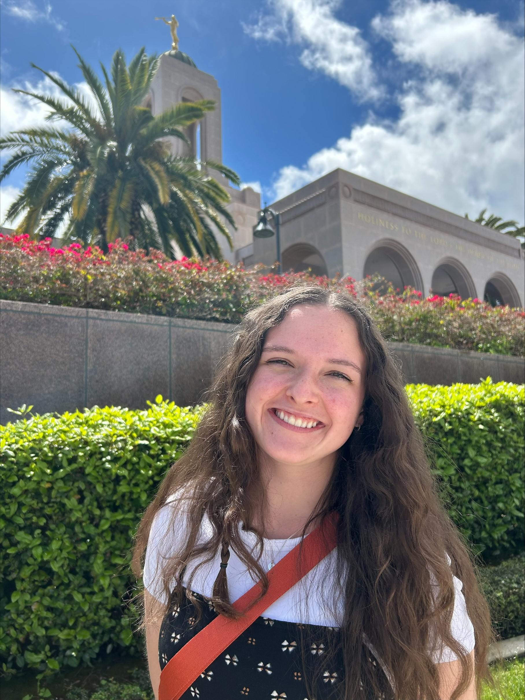

Work Experience
Museum Educator
Bean Life Science Museum at BYU
July 2021-May 2022
- Created a welcoming and fun environment for patrons
- Taught guests about different aspects of life science
- Helped the museum run smoothly by directing visitors, answering phone calls, and performing other administrative tasks
Shift Lead/Manager
Local Cookie Co.
October 2020-July 2021
- Brought joy to customers in-store through personal customer service
- Served thousands through careful work in catering orders that result in mouth watering cookies
- Organized efforts and work alongside two to four co-workers in an environment of high love and high expectations
- Listened and clearly communicated with the company CEO
Fulfillment Staff
eReplacement Parts Warehouse
June 2021-August 2021
- Paid attention to detail to fulfill specific orders in a warehouse of hundreds of thousands of pieces
- Problem solved to find missing pieces while working independently
- Maintained focus and positivity while performing repetitive tasks
Education
Sophomore at
Brigham Young University
August 2021-April 2022; January 2024-Present
GPA: 3.68
Graduated from
Bingham High School
2021
GPA: 3.94
Volunteer
Full-time Missionary
The Church of Jesus Christ of Latter-day Saints
Served in the state of Washington
June 2022-November 2023
Youth Mentor
Provo Youth Mentoring
Was a mentor for a sixth grade girl
August 2021-March 2022
National Honor Society
Participated in a variety of community service projects
August 2018-June 2021
Skills
- Proficient in Microsoft Word, PowerPoint, and Excel
- Proficient on Canva
- Punctual
- Adaptable
- Organized
- Proactive
